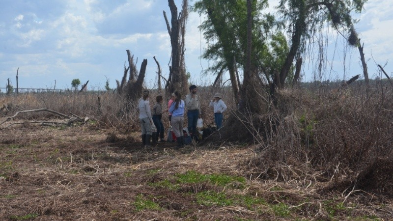

Fuego en las islas: “Hoy es incontrolable con las extensiones tan grandes por la bajante del río”
El director de Protección Civil, Roberto Rioja, confirmó que se circunscribió el incendio frente a Villa Constitución pero advirtió que “la situación es muy grave por la sequía y el comienzo de altas temperaturas”
 1 de 1 | Los pastos quemados por el fuego. (Foto de archivo) (Guillermo Montero/UNR )Luego de la advertencia del Observatorio de la Universidad Nacional d e Rosario (UNR) sobre los focos activos en la zona de islas y la posibilidad de que el olor a humo llegue a la ciudad el próximo domingo, se informaron ayer sobre la existencia de fuego en una zona lindera a la res erva de la Isla del Sol, territorio perteneciente a la provincia de Santa Fe. Tras ser notificados del incendio, integrantes de Defensa Civil de Villa Constitución intentaron acercarse al lugar, pero no lograron acceder, por lo que notificaron de la situación al gobiern o provincial.
El otro incendio fue informado frente a Villa Constitución y San Nicolás, en la zona perteneciente a Entre R íos.Estos focos fueron detectados mediante imágenes satelitales y confirmados a través de un vuelo vigía re alizado a últimas horas del martes a cargo de la provincia de Santa Fe.
En diálogo con Radiópolis, el programa de Roberto Caferra en Radio 2, el director de Defensa Civil provinci al, Roberto Rioja, confirmó en ese sentido: “En el incendio frente a Villa Constitución trabajamos ayer y quedó circunscrito".
Sin embargo, la situación se presenta, una vez más, preocupante. “En el Ministerio de Medio Ambiente de Sa nta Fe trabajamos en el lugar para tener una punta y pasarle a la Justicia y empezar una causa. Es tamos abocados a determinar el problema y que la gente tenga menos inconvenientes cuando rote el viento”, precisó.
Consultado sobre la “mano del hombre” en este asunto, el funcionario no descartó la posibilidad aunque desc artó que hayan divisado en los patrullajes aéreos la presencia de personas e os campos. “La quema controlad a de pastizales está autorizada en Entre Ríos, pero antes las islas estaban rodeadas por agua pero ahora, c on la bajante de 15 islas hay una sola y es incontrolable el fuego, no lo pude controlar nadie”, observó y remarcó: “La situación es muy complicada, está todo seco, no llueve y empiezan las altas temperatur as”.